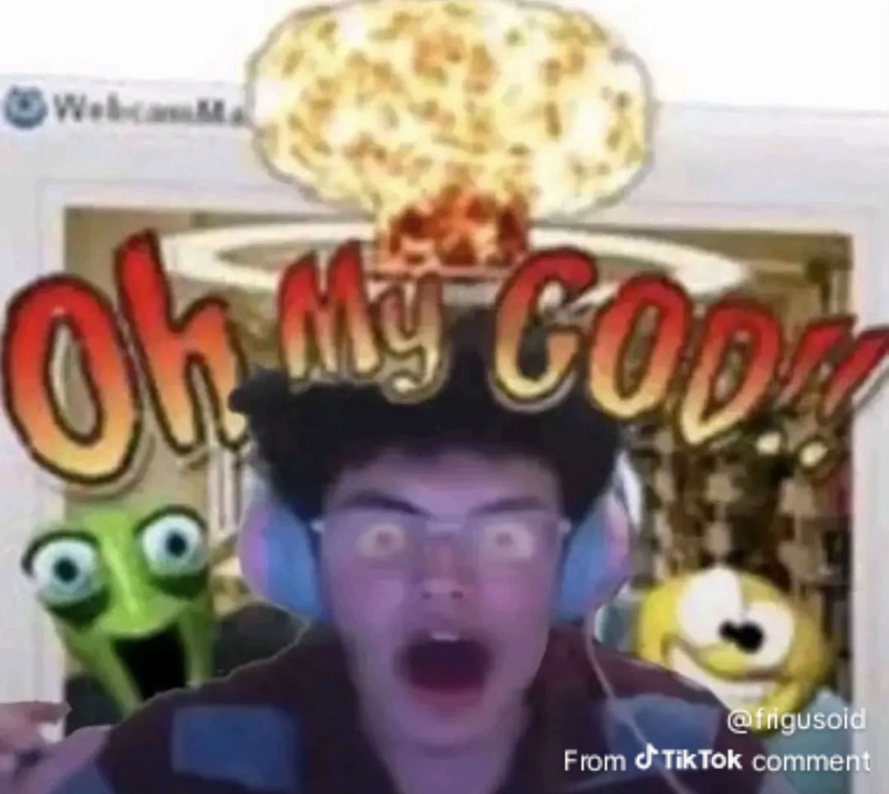
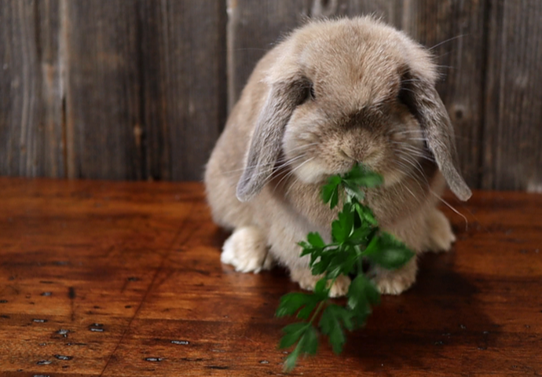

ENTRY #1
[2026-03-17]
Holy. Wow. This day was definitely some sort of rollercoaster, specifically one close to Space Shuttle! In short a lot (maybe just for me though) of things happened today. And I'm gonna start talking right away because it is about to be my bedtime (23:00 H).
Starting off strong, my old crush accepted my discord friend request. I sent that last night because I was feeling brave! And who would've thought they'd Actually accept it at FIVE IN THE MORNING AFTER. RIGHT WHEN I WAS GETTING READY FOR SCHOOL. I crashed out on the spot I kid you not lad. I kept saying oh my god like I finally beat Orbit

Jokes aside this is actually very big to me. I missed them so much waaah ╥﹏╥ Also how do i tell her I moved from Bulacan to QC back in October of last year because of my progressive deteriorating mental state being in my past school that. Well. Let's say very much affected my physical health as well.
Lets not elaborate more on the topic. Maybe i will when the moment i for real Crash out here comes.
Anyways I took a picture of a Bouganvillea flower earlier!!! I posted it on IG!!
 Its so pretty. In my opinion i think this is one of my best shots I've ever taken in a while. I look forward to finding more flowers and improving my photography skills!!!! And also humiliating myself on the way because people will think I'm a creep for using my phone's camera wawawawa :(
As for my mental state its not going well. I dont know why. This is actually one of the very few times in which I'm not very aware of my emotions (in terms of not knowing why I'm feeling like this). Maybe im just bored. Admit it or not, it happens. Dopamine is such a weird brain chemical
Okay this entry was short lived because as I am writing this paragraph it is currently past my bed time. I am considered unhealthy now.
Anyways good night everyone. I wish the workd gives me more dopamine tomorrow. Speaking of tomorrow, KAZUI MV TOMORROW. His voice drama just dropped like a few hours ago and if i recall correctly THEY MADE KAZUI EXPLICITLY STATE THAT HE IS QJEER. ATTRACTED TO MEN. WE WON. Many people definitely didnt expect this but what a great plot twist (in milgram people's storytelling, not the plot itself)
Its so pretty. In my opinion i think this is one of my best shots I've ever taken in a while. I look forward to finding more flowers and improving my photography skills!!!! And also humiliating myself on the way because people will think I'm a creep for using my phone's camera wawawawa :(
As for my mental state its not going well. I dont know why. This is actually one of the very few times in which I'm not very aware of my emotions (in terms of not knowing why I'm feeling like this). Maybe im just bored. Admit it or not, it happens. Dopamine is such a weird brain chemical
Okay this entry was short lived because as I am writing this paragraph it is currently past my bed time. I am considered unhealthy now.
Anyways good night everyone. I wish the workd gives me more dopamine tomorrow. Speaking of tomorrow, KAZUI MV TOMORROW. His voice drama just dropped like a few hours ago and if i recall correctly THEY MADE KAZUI EXPLICITLY STATE THAT HE IS QJEER. ATTRACTED TO MEN. WE WON. Many people definitely didnt expect this but what a great plot twist (in milgram people's storytelling, not the plot itself)

torpekasa